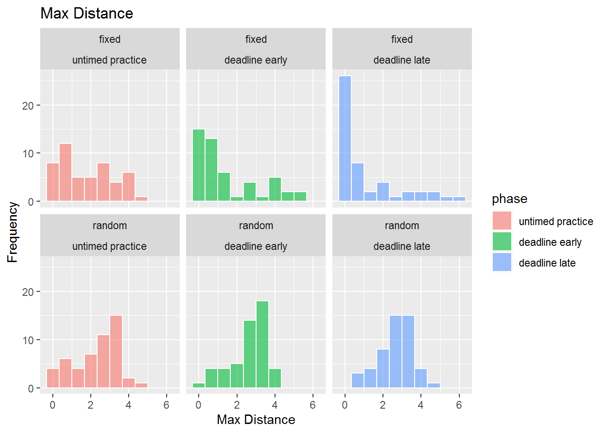
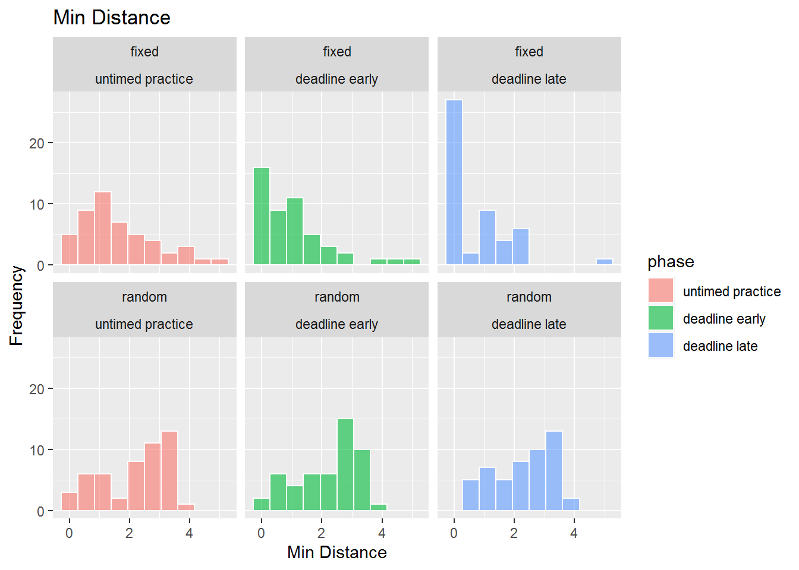

Human scheduling of perceptual tasks
Last updated: 2020-06-01
Checks: 7 0
Knit directory: SCHEDULE_RT/
This reproducible R Markdown analysis was created with workflowr (version 1.6.1). The Checks tab describes the reproducibility checks that were applied when the results were created. The Past versions tab lists the development history.
Great! Since the R Markdown file has been committed to the Git repository, you know the exact version of the code that produced these results.
Great job! The global environment was empty. Objects defined in the global environment can affect the analysis in your R Markdown file in unknown ways. For reproduciblity it’s best to always run the code in an empty environment.
The command set.seed(20200416) was run prior to running the code in the R Markdown file. Setting a seed ensures that any results that rely on randomness, e.g. subsampling or permutations, are reproducible.
Great job! Recording the operating system, R version, and package versions is critical for reproducibility.
Nice! There were no cached chunks for this analysis, so you can be confident that you successfully produced the results during this run.
Great job! Using relative paths to the files within your workflowr project makes it easier to run your code on other machines.
Great! You are using Git for version control. Tracking code development and connecting the code version to the results is critical for reproducibility.
The results in this page were generated with repository version 33ea1a4. See the Past versions tab to see a history of the changes made to the R Markdown and HTML files.
Note that you need to be careful to ensure that all relevant files for the analysis have been committed to Git prior to generating the results (you can use wflow_publish or wflow_git_commit). workflowr only checks the R Markdown file, but you know if there are other scripts or data files that it depends on. Below is the status of the Git repository when the results were generated:
Ignored files:
Ignored: .Rhistory
Ignored: .Rproj.user/
Ignored: analysis/site_libs/
Untracked files:
Untracked: analysis/license.utf8.md
Untracked: analysis/prereg.pdf
Untracked: analysis/prereg.tex
Untracked: data/create_database.sql
Note that any generated files, e.g. HTML, png, CSS, etc., are not included in this status report because it is ok for generated content to have uncommitted changes.
These are the previous versions of the repository in which changes were made to the R Markdown (analysis/index.Rmd) and HTML (docs/index.html) files. If you’ve configured a remote Git repository (see ?wflow_git_remote), click on the hyperlinks in the table below to view the files as they were in that past version.
| File | Version | Author | Date | Message |
|---|---|---|---|---|
| Rmd | 33ea1a4 | knowlabUnimelb | 2020-06-01 | Update analysis and fix bug in optimality analysis |
| html | bcbc544 | knowlabUnimelb | 2020-05-27 | Build site. |
| Rmd | 4c06a56 | knowlabUnimelb | 2020-05-27 | Update analysis and data |
| html | 4e1bc34 | knowlabUnimelb | 2020-05-27 | Build site. |
| Rmd | adc3da5 | knowlabUnimelb | 2020-05-27 | Update analysis |
| html | c0e7aa8 | knowlabUnimelb | 2020-05-27 | Build site. |
| Rmd | dbcb22b | knowlabUnimelb | 2020-05-27 | Update analysis and data |
| html | 2abf13c | knowlabUnimelb | 2020-05-26 | Build site. |
| Rmd | 98777c9 | knowlabUnimelb | 2020-05-26 | Update analysis and data |
| html | 4d0e42a | knowlabUnimelb | 2020-04-27 | Build site. |
| html | 5a349a4 | knowlabUnimelb | 2020-04-27 | Build site. |
| html | d53986b | knowlabUnimelb | 2020-04-20 | Build site. |
| html | 09b5e18 | knowlabUnimelb | 2020-04-17 | Build site. |
| html | 2b2326d | knowlabUnimelb | 2020-04-17 | Build site. |
| Rmd | bb248c2 | knowlabUnimelb | 2020-04-17 | Scheduling task analysis |
| Rmd | 79a1183 | knowlabUnimelb | 2020-04-16 | Start workflowr project. |
Daniel R. Little1, Ami Eidels2, and Deborah J. Lin1
1 The University of Melbourne, 2 The University of Newcastle
Scheduling Project
Details regarding our study are provided here: Preregistration Document
Data Preprocessing
Data Cleaning
Two experiments were completed online: one using fixed task locations on each trial and one using random task locations on each trial. Subjects completed the experiment by clicking a link with the uniquely generated id code. Subjects were able to use the link multiple times; further, subjects were able to exit the experiment at any time. Consequently, the datafile contains partially completed data for some subjects which needs to be identified and removed.
Method
Participants
We tested 93 participants (65 F, 23 M, 5 Undeclared). Participants were recruited through the Melbourne School of Psychological Sciences Research Experience Pool (Mean age = 19.62, range = 17 - 49). Participants were reimbursed with credit toward completion of a first year psychology subject. Datasets from 3 subjects were excluded for completing the experiment twice; i.e., only the first of the datasets for these subjects was retained.
Forty-nine were assigned to the Fixed Difficulty condition. In this condition, the location of easy, medium, hard, and very hard random dot kinematograms (RDK’s) was held constant across trials.
Forty-four were assigned to the Random Difficulty condition. In this condition, the location of easy, medium, hard, and very hard random dot kinematograms (RDK’s) were randomized from trial to trial.
The Fixed Difficulty experiment was completed before the Random Difficulty experiment. Participants only completed one of these.
Design
In each condition, participants completed multiple trials in which they selected and completed RDK tasks. On each trial, participants were shown a set of four RDKs labelled Easy, Medium, Hard, and Very Hard. The labels corresponded to the difficulty of the RDK. The proportion of dots moving in a coherent direction was set to 0.8, 0.5, 0.2, and 0.0 for the Easy, Medium, Hard, and Very Hard locations, respectively.
From the set of four, participants selected and completed one RDK at a time in any order. The goal of each trial was to complete as many as possible before a deadline.
Participants first completed 10 trials with a long (60 sec) deadline to help participants learn the task, explore strategies, and allow for comparison to a short-deadline condition. We term this the no deadline condition since the provided time is well beyond what is necessary to complete all four RDK’s. Next, participants completed 30 trials with a 6 second deadline.
Data Analysis
| difficulty | phase | condition | accuracy | rt | n |
|---|---|---|---|---|---|
| Very Hard | no deadline | fixed_location | 0.55 | 1294.34 | 1375 |
| Hard | no deadline | fixed_location | 0.68 | 1121.78 | 1181 |
| Medium | no deadline | fixed_location | 0.60 | 895.33 | 1382 |
| Easy | no deadline | fixed_location | 0.46 | 855.13 | 2082 |
| Very Hard | deadline | fixed_location | 0.61 | 588.70 | 2914 |
| Hard | deadline | fixed_location | 0.73 | 591.70 | 3086 |
| Medium | deadline | fixed_location | 0.78 | 533.98 | 3149 |
| Easy | deadline | fixed_location | 0.78 | 525.20 | 3542 |
| Very Hard | no deadline | random_location | 0.50 | 1128.44 | 1375 |
| Hard | no deadline | random_location | 0.67 | 1011.09 | 1181 |
| Medium | no deadline | random_location | 0.61 | 852.85 | 1382 |
| Easy | no deadline | random_location | 0.36 | 790.95 | 2082 |
| Very Hard | deadline | random_location | 0.57 | 499.18 | 2914 |
| Hard | deadline | random_location | 0.64 | 477.94 | 3086 |
| Medium | deadline | random_location | 0.70 | 471.92 | 3149 |
| Easy | deadline | random_location | 0.60 | 479.59 | 3542 |
We first summarize performance by answering the following:
- How many tasks are completed on average?
On average, across both conditions, participants completed 3.61 tasks during the no deadline phase and 3.24 tasks during the deadline phase.
TODO: What is the average time taken to complete the RDK’s?
TODO: Did this differ between the fixed and random location conditions?
What is the average completion time and accuracy of the easy, medium, hard, and very hard tasks? The results indicated that the RTs became faster as the difficulty if the RDK became easier.

Optimality in each condition
The task set presented to each subject will have an optimal solution (ordered from easiest to most difficult). We first ask:
- What is the proprotion of easy, medium, hard, and very hard patches selected first, second, third or fourth?

- We next ask whether the sequence of choices reflected the optimal order: What is the proportion of easy-task-first choices in each condition? Of easy-then-medium? Of easy-medium-then-hard?
| phase | condition | easy.first | easy.med | easy.med.hard |
|---|---|---|---|---|
| untimed | fixed | 0.68 | 0.55 | 0.42 |
| deadline | fixed | 0.80 | 0.79 | 0.73 |
| untimed | random | 0.51 | 0.35 | 0.24 |
| deadline | random | 0.49 | 0.24 | 0.12 |
The next analysis will compute something like Kendall’s Tau, rank-order distance, which ranges between 0 (perfect match) and 6 (maximally distant), for 4 options.
What we want is the distance of the selected options from the optimal solutions, which is Kendall’s Tau. However, because a participant may run out of time, there may be missing values. To handle these values, for each trial, we find the orders which partially match the selected order and compute three measures of performance: 1. the maximum distance of those possible orders and the optimal solution (max_distance). This analysis is biased against optimality because it assumes that partially completed sequences would have eventually been non-optimal.
the minimum distance of the partial orders and the optimal solution (min_distance). This analysis is biased toward optimality because it assumes that partially completed sequences would have eventually been closer to optimal.
the average distance of those possible orders and the optimal solution (avg_distance).
The following figures compare max_distance, min_distance, and avg_distance between the fixed difficulty and random difficulty conditions as a function of deadline condition and phase.

Alternative response strategies
An alternative possible strategy involves selecting tasks based on spatial position. One salient strategy would be to start with a task and then select the remaining tasks in clockwise and anti-clockwise order.
The following plot shows the distribution of distribution of participant’s spatial strategy use. Higher proportions indicate responses which are more consistent with a spatial strategy. These figures indicate that when difficulty is maintained in a fixed location, two groups emerge under a deadline: those who do not use a spatial strategy and those who do use a spatial strategy.
In the random difficulty condition, participants tend not to use a spatial strategy except later in the task where there is a deadline.

Some other questions arise:
- TODO: What should be done with fixed location participants in which the optimal solution is also a circular strategy? Analyse the data again but removing trials in which difficulty is mapped in a circular manner?
sessionInfo()R version 3.6.3 (2020-02-29)
Platform: x86_64-w64-mingw32/x64 (64-bit)
Running under: Windows 7 x64 (build 7601) Service Pack 1
Matrix products: default
locale:
[1] LC_COLLATE=English_Australia.1252 LC_CTYPE=English_Australia.1252
[3] LC_MONETARY=English_Australia.1252 LC_NUMERIC=C
[5] LC_TIME=English_Australia.1252
attached base packages:
[1] stats graphics grDevices utils datasets methods base
other attached packages:
[1] reshape2_1.4.3 knitr_1.28 hrbrthemes_0.8.0 english_1.2-5
[5] gtools_3.8.2 DescTools_0.99.34 forcats_0.5.0 stringr_1.4.0
[9] dplyr_0.8.5 purrr_0.3.3 readr_1.3.1 tidyr_1.0.2
[13] tibble_3.0.0 ggplot2_3.3.0 tidyverse_1.3.0 workflowr_1.6.1
loaded via a namespace (and not attached):
[1] httr_1.4.1 jsonlite_1.6.1 modelr_0.1.6 assertthat_0.2.1
[5] expm_0.999-4 highr_0.8 cellranger_1.1.0 yaml_2.2.1
[9] gdtools_0.2.2 Rttf2pt1_1.3.8 pillar_1.4.3 backports_1.1.5
[13] lattice_0.20-38 glue_1.4.0 extrafontdb_1.0 digest_0.6.25
[17] promises_1.1.0 rvest_0.3.5 colorspace_1.4-1 plyr_1.8.6
[21] htmltools_0.4.0 httpuv_1.5.2 Matrix_1.2-18 pkgconfig_2.0.3
[25] broom_0.5.5 haven_2.2.0 mvtnorm_1.1-0 scales_1.1.0
[29] whisker_0.4 later_1.0.0 git2r_0.26.1 farver_2.0.3
[33] generics_0.0.2 ellipsis_0.3.0 withr_2.1.2 cli_2.0.2
[37] magrittr_1.5 crayon_1.3.4 readxl_1.3.1 evaluate_0.14
[41] fs_1.4.1 fansi_0.4.1 nlme_3.1-144 MASS_7.3-51.5
[45] xml2_1.3.0 tools_3.6.3 hms_0.5.3 lifecycle_0.2.0
[49] munsell_0.5.0 reprex_0.3.0 compiler_3.6.3 systemfonts_0.2.2
[53] rlang_0.4.5 grid_3.6.3 rstudioapi_0.11 labeling_0.3
[57] rmarkdown_2.1 boot_1.3-24 gtable_0.3.0 DBI_1.1.0
[61] R6_2.4.1 lubridate_1.7.4 extrafont_0.17 rprojroot_1.3-2
[65] stringi_1.4.6 Rcpp_1.0.4 vctrs_0.2.4 dbplyr_1.4.2
[69] tidyselect_1.0.0 xfun_0.12